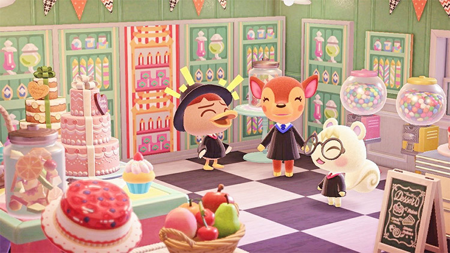

Danna Paola Ruiz Hernández
Estudiante de séptimo semestre de la carrera Ingeniero Administrador de Sistemas de la Universidad Autónoma de Nuevo León, con conocimientos en soporte técnico, análisis de datos y redes. Habilidad para el manejo de paquete Office, el trabajo en equipo, la comunicación efectiva, adaptabilidad y resolución de problemas.
Trayectoria Educacional
Carerra: Ingeniero Administrador de Sistemas
2022 - Presente
Universidad Autónoma de Nuevo León
Facultad de Ingeniería, Mecánica y Eléctrica
Promedio general: 8.4/10.
Preparatoria No. 25 "Eduardo Aguirre Pequeño"
2020 - 2022
Universidad Autónoma de Nuevo León
Promedio general: 9.1/10.
Esc.Secundaria #°116 Enrique Quiroga Ruiz
2018 - 2020
SEP
Promedio general: 9.6/10.
Escuela Donatila Villarreal Villarreal
2012 - 2018
SEP
Promedio general: 9.8/10.
Experiencia Laboral
Asistente de salón
Ene 2019 - Ago 2022
Salón de belleza
- Asistencia en Procesos de Coloración
- Técnicas de Lavado y Tratamiento Capilar
- Comunicación Efectiva y Asertiva
Hobbys
Lectura
Disfruto leer libros de fantasía y romance. En mi tiempo libre acostumbro a leer al menos 2 libros por semana, estos son algunos de mis libros favoritos:
El perfume del Rey
Rival Darling
El favor mas dulce
Harry Potter y el prisionero de Azkaban
Videojuegos
En mi tiempo libre también me gusta jugar videojuegos con mis amigos, estos son algunos de mis favoritos:
Animal Crossing
Roblox
Overwatch
Mario Kart 8
Overcooked 2
Programas de Televisión
Una de mis cosas favoritas es ver series, estas son algunas de mis favoritas:
Supernatural
The Big Bang Theory
Bridgerton
Modern Family
2 broke girls
Películas
Me gusta ver peliculas en especial de la directora Sofia Coppola, estas son algunas de mis favoritas:
Maria Antonieta
Las virgenes suicidas
Priscilla
Somewhere
Galería de mis hobbys favoritos
Algunas fotos de algunos de mis hobbys favoritos:
